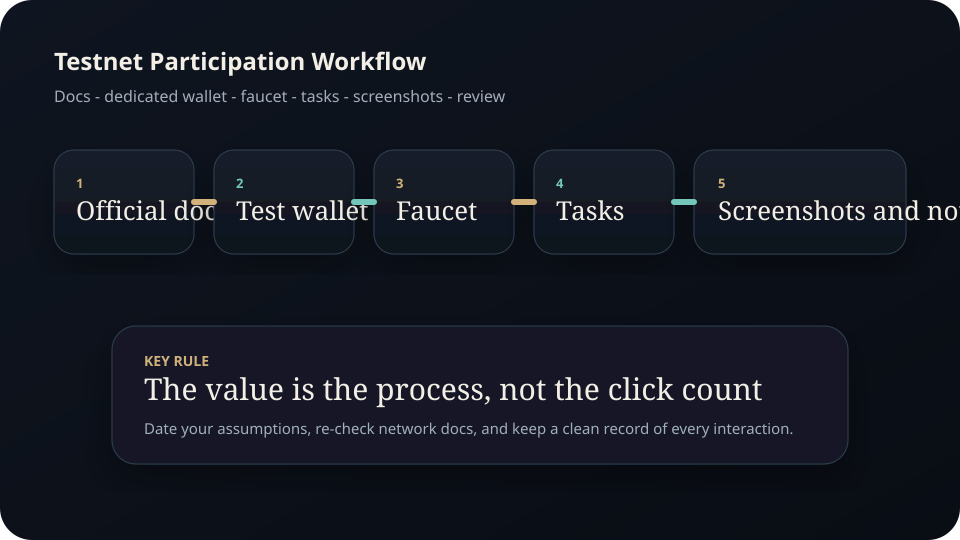
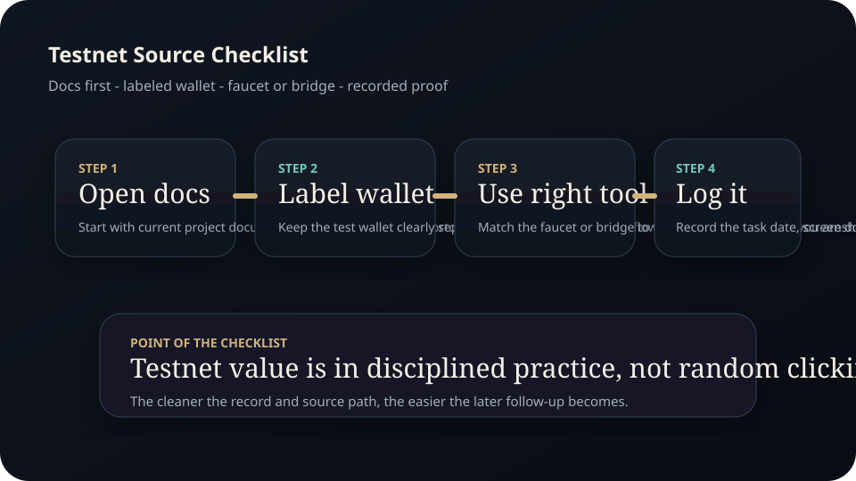
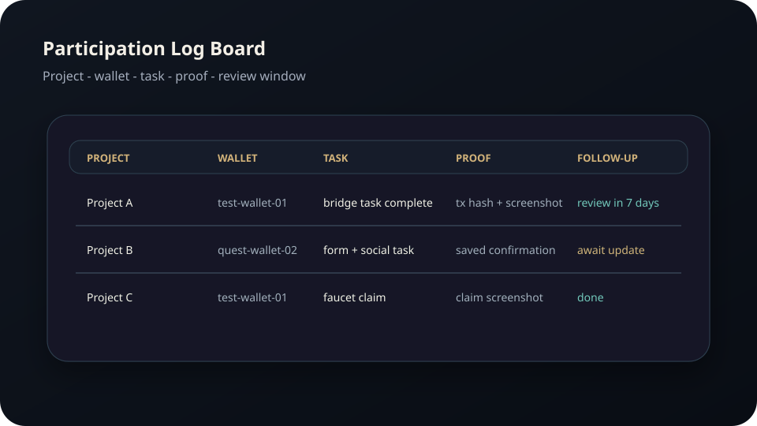

Full Edition
Testnet Participation Guide.
A full beginner edition on public test networks, faucets, wallet separation, bridge flow, evidence logging, and the discipline required to participate without turning the process into random clicking.
Disclaimer Page
Important educational and legal notice
Testnets are learning and development environments. They can still expose users to scams, fake links, unsafe wallet interactions, and wasted time.
- Madeesh P. Nissanka is not a financial advisor, protocol team member, legal adviser, or tax professional.
- This guide is educational only and does not guarantee rewards, airdrops, allocations, points, or profit.
- Testnet conditions, networks, faucets, and eligibility rules can change quickly. Readers must verify current official documentation.
- Even on testnets, unsafe approvals, fake websites, and bad operational habits can create security problems.
- Using a dedicated test wallet is a risk-reduction habit, not a guarantee of safety.
- Any reader participating in campaigns or on-chain tasks is responsible for their own due diligence and operational decisions.
Contents
Full chapter map
This edition treats organization as part of the edge.
What a testnet is
Learning environments, not free-money machines.
Wallet separation
Dedicated test wallets, labels, and safer interaction patterns.
Faucets and bridges
How test assets move and why official links matter.
Task workflow
Quest logs, screenshots, dates, and evidence collection.
Network updates
Why network guidance changes and how to stay current.
Security discipline
How to keep testing from becoming a wallet problem.
Chapter 1
Testnets exist to practice and test, not to replace process
A public testnet is a network environment designed for development, testing, and experimentation. The tokens used there are generally intended for testing, not for normal economic value. That makes testnets useful for learning transaction flow, wallet interaction, and protocol navigation without risking mainnet capital.
The beginner trap is to treat testnets like a random scavenger hunt. The stronger model is to use them as structured practice environments where the main value is process: following official docs, executing steps carefully, and tracking what was done.
Chapter 2
Wallet separation is the baseline rule
Use a dedicated wallet for testnet activity. That wallet should not be the same wallet that holds meaningful assets or connects to sensitive production workflows. Even though many testnet interactions are harmless, the safest default is to isolate experimentation from value storage.
Label wallets clearly, record which projects they interact with, and keep a simple sheet of network additions, faucet claims, and task dates.
Chapter 3
Faucets and bridges should come from official documentation first
Testnet tokens are typically obtained from faucets or moved through designated bridge or network tools. The correct link matters. A beginner should start from official documentation or a verified project page rather than from social-media replies or random dashboards.
- Save the official documentation link before opening the wallet.
- Check the requested network and wallet connection carefully.
- Record which faucet or bridge was used and on what date.
- Keep screenshots if the activity may matter for later proof-of-participation claims.

Figure A. Treat testnet participation like a documented workflow, not a random task list.
Chapter 4
Task tracking turns random participation into a workflow
The strongest beginner upgrade is a tracking sheet. Record the project name, the wallet used, the network, the steps completed, the date, and any screenshot or transaction proof. Without that log, the user often forgets what was done and cannot evaluate which projects are worth revisiting.
This is especially important when projects release new quests or update eligibility logic. Clean records make follow-up possible. Disorder makes it impossible.

Figure B. The most useful testnet workflow starts from documentation, not from social shortcuts.

Figure C. A simple log board keeps wallet usage, proof, and follow-up dates visible.
Chapter 5
Public network guidance changes, so date your assumptions
As of March 19, 2026, ethereum.org documentation distinguishes between public Ethereum test environments such as Sepolia and Hoodi, and it also discusses local development network tooling. That matters because public guidance can change as networks are upgraded, deprecated, or repurposed.
The practical rule is simple: never assume last month’s screenshots are still current. Re-check the official network documentation before adding a chain, requesting faucet assets, or following a tutorial.
Chapter 6
Security discipline still applies on testnets
Because the economic value is lower, some users get careless. That is backwards. Testnets often expose users to unfamiliar sites, experimental interfaces, and new wallet prompts. Every connection, signature, and domain still needs to be verified.
- Keep the test wallet separate.
- Use official links first, not social replies first.
- Document the interaction so you can review it later.
- Stop immediately if the requested action differs from what the docs described.
Research Notes
Source foundation and further reading
External facts were paraphrased and checked against official or public-interest sources available at drafting time. Before public launch, re-check network status, faucet links, and participation requirements against the current official documentation.
Publication Note
End of full edition
This manual is published as part of the Madeesh P. Nissanka educational library and is intended as a practical guide for organized and safer testnet participation.
Educational only. Not financial advice.
Madeesh P. Nissanka